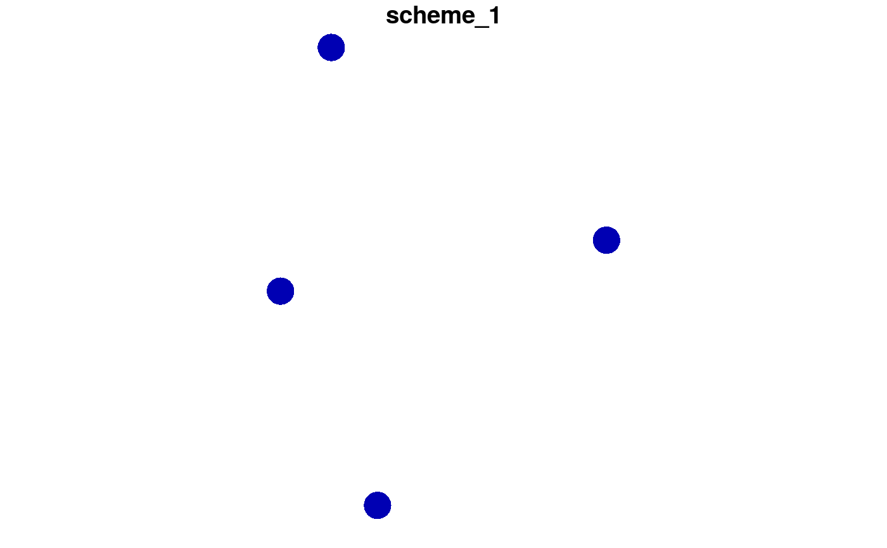

Generate a matrix representing all possible different
survey schemes given surveying costs and a fixed budget.
feasible_survey_schemes( site_data, cost_column, survey_budget, locked_in_column = NULL, locked_out_column = NULL, verbose = FALSE )
| site_data |
|
|---|---|
| cost_column |
|
| survey_budget |
|
| locked_in_column |
|
| locked_out_column |
|
| verbose |
|
matrix where each row corresponds to a different
survey scheme, and each column corresponds to a different planning unit.
Cell values are logical (TRUE / FALSE) indicating
if a given site is selected in a given survey scheme.
# set seed for reproducibility set.seed(123) # simulate data x <- sf::st_as_sf(tibble::tibble(x = rnorm(4), y = rnorm(4), cost = c(100, 200, 0.2, 1)), coords = c("x", "y")) # print data print(x)#> Simple feature collection with 4 features and 1 field #> geometry type: POINT #> dimension: XY #> bbox: xmin: -0.5604756 ymin: -1.265061 xmax: 1.558708 ymax: 1.715065 #> CRS: NA #> # A tibble: 4 x 2 #> cost geometry #> <dbl> <POINT> #> 1 100 (-0.5604756 0.1292877) #> 2 200 (-0.2301775 1.715065) #> 3 0.2 (1.558708 0.4609162) #> 4 1 (0.07050839 -1.265061)# generate all feasible schemes given a budget of 4 s <- feasible_survey_schemes(x, "cost", survey_budget = 4) # print schemes print(s)#> [,1] [,2] [,3] [,4] #> [1,] FALSE FALSE FALSE FALSE #> [2,] FALSE FALSE TRUE FALSE #> [3,] FALSE FALSE FALSE TRUE #> [4,] FALSE FALSE TRUE TRUE